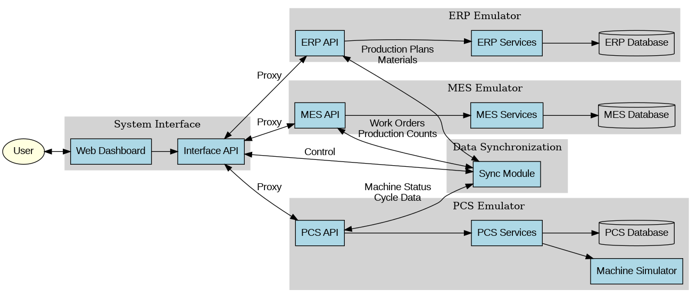

Manufacturing Emulator System Documentation
A comprehensive emulation system for ERP, MES, and PCS with time-synchronized data updates.
The Manufacturing Emulator System is designed to test and validate manufacturing integration scenarios by providing realistic emulations of:
- ERP (Enterprise Resource Planning) - Handles master data, inventory, and production planning
- MES (Manufacturing Execution System) - Manages work orders, production scheduling, and quality control
- PCS (Process Control System) - Simulates plastic injection machines with realistic cycle phases
All three systems are integrated with time-synchronized data updates, allowing for comprehensive testing of manufacturing workflows and interfaces.
System Architecture
The Manufacturing Emulator System follows a modular architecture with separate components for ERP, MES, and PCS, connected through well-defined interfaces:

Key architectural features:
- Each component (ERP, MES, PCS) runs as an independent service
- RESTful APIs enable communication between components
- Separate databases for each component ensure isolation
- Data synchronization mechanism ensures consistency across systems
- Unified web interface provides monitoring and control capabilities
ERP Emulator
The ERP (Enterprise Resource Planning) emulator handles master data management, inventory control, production planning, and order processing.
Key Features
- Material master data management
- Product definition with bill of materials (BOM)
- Production planning and scheduling
- Inventory management
- Order processing
Master Data Management
The ERP emulator provides comprehensive master data management capabilities, allowing you to create and manage:
- Materials - Raw materials, semi-finished goods, and finished products
- Products - Finished goods with associated bill of materials
- Bill of Materials (BOM) - Component structure for products
- Production Plans - Scheduled production with quantities and due dates
For detailed information on creating and managing master data, see the Master Data Management section.
MES Emulator
The MES (Manufacturing Execution System) emulator manages work orders, production scheduling, quality control, and production tracking.
Key Features
- Work order management
- Production scheduling
- Machine allocation
- Quality control
- Production counting
- Material tracking
Work Order Management
The MES emulator converts production plans from the ERP into executable work orders, which are then assigned to specific machines. Each work order includes:
- Product information
- Quantity to produce
- Required materials
- Quality parameters
- Production schedule
PCS Emulator for Plastic Injection Machines
The PCS (Process Control System) emulator simulates plastic injection machines with realistic cycle phases, parameter control, and alarm handling.
Key Features
- Realistic cycle phase simulation (mold close, injection, packing, cooling, mold open, part ejection)
- Machine parameter control
- Sensor data generation
- Alarm handling
- Production cycle counting
Machine Simulation
The PCS emulator simulates plastic injection machines with the following cycle phases:
- Mold Close - The mold closes and locks
- Injection - Molten plastic is injected into the mold cavity
- Packing - Additional material is packed into the mold to compensate for shrinkage
- Cooling - The material cools and solidifies
- Mold Open - The mold opens
- Part Ejection - The finished part is ejected from the mold
Each phase has realistic timing and parameter variations, with random alarm generation to simulate real-world conditions.
Data Synchronization Mechanism
The data synchronization mechanism ensures time-synchronized data flow between all three systems:
Key Data Flows
- ERP to MES:
- Production plans
- Material master data
- Product definitions
- Bill of materials
- MES to ERP:
- Production counts
- Material consumption
- Quality data
- MES to PCS:
- Work orders
- Machine parameters
- Production schedules
- PCS to MES:
- Machine status
- Production cycles
- Alarms
- Quality data
Synchronization Mechanism
Data synchronization is achieved through:
- Periodic polling of APIs
- Event-based notifications
- Time-stamped data records
- Conflict resolution mechanisms
API Reference
All components expose RESTful APIs for integration and control:
ERP API Endpoints
GET /api/v1/materials - List all materials
POST /api/v1/materials - Create a new material
GET /api/v1/materials/{id} - Get material details
PUT /api/v1/materials/{id} - Update material
DELETE /api/v1/materials/{id} - Delete material
GET /api/v1/products - List all products
POST /api/v1/products - Create a new product
GET /api/v1/products/{id} - Get product details
PUT /api/v1/products/{id} - Update product
DELETE /api/v1/products/{id} - Delete product
GET /api/v1/production-plans - List all production plans
POST /api/v1/production-plans - Create a new production plan
GET /api/v1/production-plans/{id} - Get production plan details
PUT /api/v1/production-plans/{id} - Update production plan
DELETE /api/v1/production-plans/{id} - Delete production planMES API Endpoints
GET /api/v1/work-orders - List all work orders
POST /api/v1/work-orders - Create a new work order
GET /api/v1/work-orders/{id} - Get work order details
PUT /api/v1/work-orders/{id} - Update work order
DELETE /api/v1/work-orders/{id} - Delete work order
GET /api/v1/machines - List all machines
POST /api/v1/machines - Register a new machine
GET /api/v1/machines/{id} - Get machine details
PUT /api/v1/machines/{id} - Update machine
DELETE /api/v1/machines/{id} - Delete machine
GET /api/v1/schedule - Get production schedule
POST /api/v1/schedule - Update production schedulePCS API Endpoints
GET /api/v1/machines/status - Get status of all machines
GET /api/v1/machines/{id}/status - Get status of specific machine
POST /api/v1/machines/{id}/start - Start a machine
POST /api/v1/machines/{id}/stop - Stop a machine
POST /api/v1/machines/{id}/parameters - Update machine parameters
GET /api/v1/alarms - Get all active alarms
GET /api/v1/alarms/{id} - Get specific alarm details
POST /api/v1/alarms/{id}/acknowledge - Acknowledge an alarmDatabase Schema
Each component has its own database with the following schema:
ERP Database
Materials
- id: Integer (Primary Key)
- code: String
- name: String
- description: String
- unit: String
- type: String (raw, semi-finished, finished)
- created_at: DateTime
- updated_at: DateTime
Products
- id: Integer (Primary Key)
- code: String
- name: String
- description: String
- created_at: DateTime
- updated_at: DateTime
BOM (Bill of Materials)
- id: Integer (Primary Key)
- product_id: Integer (Foreign Key)
- material_id: Integer (Foreign Key)
- quantity: Float
- unit: String
- created_at: DateTime
- updated_at: DateTime
ProductionPlans
- id: Integer (Primary Key)
- product_id: Integer (Foreign Key)
- quantity: Integer
- due_date: DateTime
- status: String (planned, in-progress, completed)
- created_at: DateTime
- updated_at: DateTimeMES Database
WorkOrders
- id: Integer (Primary Key)
- production_plan_id: Integer
- product_id: Integer
- quantity: Integer
- scheduled_start: DateTime
- scheduled_end: DateTime
- actual_start: DateTime
- actual_end: DateTime
- status: String (scheduled, in-progress, completed)
- created_at: DateTime
- updated_at: DateTime
Machines
- id: Integer (Primary Key)
- name: String
- type: String
- status: String (idle, running, maintenance, error)
- created_at: DateTime
- updated_at: DateTime
MachineAssignments
- id: Integer (Primary Key)
- machine_id: Integer (Foreign Key)
- work_order_id: Integer (Foreign Key)
- start_time: DateTime
- end_time: DateTime
- created_at: DateTime
- updated_at: DateTimePCS Database
Machines
- id: Integer (Primary Key)
- name: String
- type: String (injection-molding)
- status: String (idle, running, error)
- current_work_order_id: Integer
- created_at: DateTime
- updated_at: DateTime
MachineParameters
- id: Integer (Primary Key)
- machine_id: Integer (Foreign Key)
- parameter_name: String
- parameter_value: Float
- unit: String
- created_at: DateTime
- updated_at: DateTime
Alarms
- id: Integer (Primary Key)
- machine_id: Integer (Foreign Key)
- alarm_code: String
- message: String
- severity: String (info, warning, error, critical)
- status: String (active, acknowledged, resolved)
- created_at: DateTime
- updated_at: DateTime
ProductionCycles
- id: Integer (Primary Key)
- machine_id: Integer (Foreign Key)
- work_order_id: Integer
- cycle_time: Float
- start_time: DateTime
- end_time: DateTime
- status: String (completed, aborted)
- created_at: DateTime
- updated_at: DateTimeMaster Data Management
The Manufacturing Emulator System provides comprehensive master data management capabilities through both API and web interface.
Creating Master Data
You can create and manage master data in several ways:
- Web Interface - Use the Master Data Management page
- API - Use the RESTful APIs to programmatically create and manage master data
- Database Initialization - Use the provided initialization scripts to populate the database with sample data
Master Data Types
The following master data types can be managed:
Materials
Materials represent raw materials, semi-finished goods, and finished products used in the manufacturing process.
Required fields:
- Code - Unique identifier for the material
- Name - Descriptive name
- Type - Material type (raw, semi-finished, finished)
- Unit - Unit of measure (kg, pcs, etc.)
Products
Products represent finished goods that are manufactured using the defined materials.
Required fields:
- Code - Unique identifier for the product
- Name - Descriptive name
- Bill of Materials - Components required to manufacture the product
Bill of Materials (BOM)
The Bill of Materials defines the components required to manufacture a product.
Required fields:
- Product - The product this BOM belongs to
- Material - The material used as a component
- Quantity - The quantity of the material required
- Unit - Unit of measure
Production Plans
Production plans define what products to manufacture, in what quantity, and by when.
Required fields:
- Product - The product to manufacture
- Quantity - The quantity to produce
- Due Date - When the production should be completed
Troubleshooting
Common issues and their solutions:
System Startup Issues
-
Components fail to start
Check the log files in the logs directory for specific error messages. Common issues include port conflicts, missing dependencies, or database connection problems.
-
Port already in use
If a port is already in use, you can either stop the process using that port or modify the configuration to use different ports.
-
Database initialization errors
Ensure the database directory exists and has the correct permissions. Run the database initialization script manually to see detailed error messages.
API Connection Issues
-
API endpoints not accessible
Verify that all components are running and that the correct ports are being used. Check for CORS issues if accessing from a different domain.
-
JSON serialization errors
These typically occur when an API endpoint returns a Response object instead of a dictionary. Check the API implementation and ensure proper return types.
Data Synchronization Issues
-
Data not updating between systems
Check the synchronization logs to see if there are any errors. Verify that all components are running and accessible.
-
Inconsistent data between systems
This can occur if synchronization fails or if there are conflicts. Check the synchronization logs and manually reconcile data if necessary.
Diagnostic Tools
The system includes several diagnostic tools to help troubleshoot issues:
- emulator_diagnostic.py - Checks system configuration and identifies common issues
- fix_imports.py - Fixes Python import issues
- fix_json_serialization.py - Fixes JSON serialization issues in API endpoints